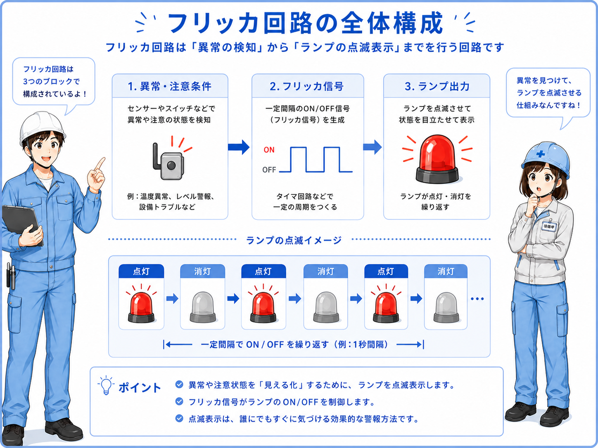
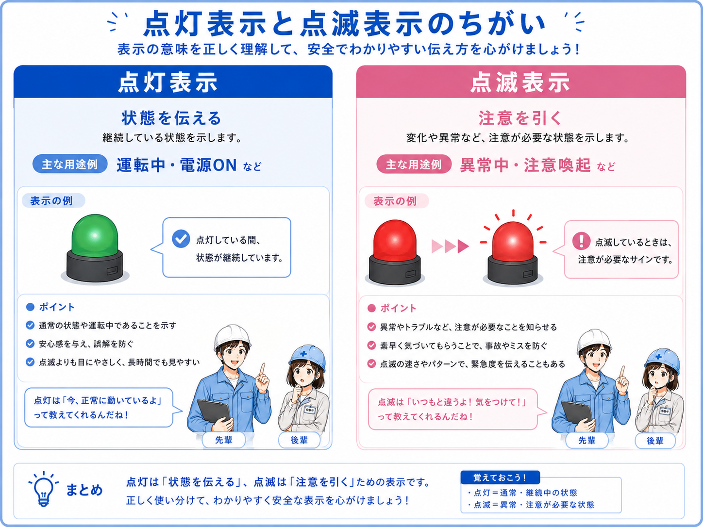
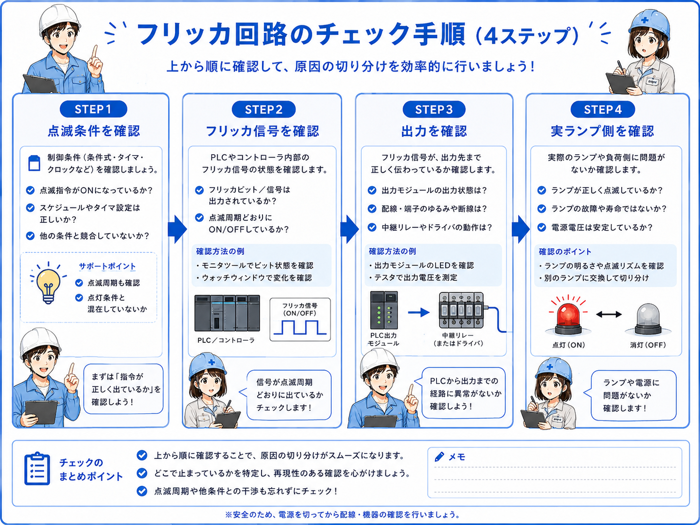

フリッカ回路の全体像
フリッカ回路は、ランプやブザーなどの出力を一定間隔でON/OFFさせる回路です。 常時点灯ではなく点滅させることで、作業者に「注意してほしい状態」や「異常がある状態」を伝えやすくします。
たとえば異常保持フラグがONしている時に、異常ランプを点滅させると、通常の点灯表示より目に入りやすくなります。 設備の状態表示、準備中表示、異常表示、注意喚起などでよく使われます。

フリッカは「目立たせるための点滅」
ただ点灯しているだけでは見逃されることがあります。 点滅させることで、作業者が状態変化や異常に気づきやすくなります。

先輩フリッカ回路は、ランプをチカチカ点滅させる回路だよ。異常や注意を目立たせたい時によく使うね。

後輩点灯と点滅で、伝えたい重要度を分けられるんですね。
フリッカ回路の基本動作
フリッカ回路では、点滅させたい条件と、一定間隔でON/OFFする信号を組み合わせます。 点滅条件がONしていて、フリッカ信号がONしているタイミングだけ、ランプ出力をONします。
PLCでは、内部クロックパルスやタイマーを使ってフリッカ信号を作ることがあります。 0.5秒点灯・0.5秒消灯、1秒点灯・1秒消灯など、点滅周期は設備の見やすさに合わせて決めます。
点滅条件
異常中、準備中、注意表示中など、点滅させたい元の条件です。
フリッカ信号
一定間隔でON/OFFする内部信号です。タイマーやクロックで作ります。
ランプ出力
点滅条件とフリッカ信号が成立した時だけONする出力です。
点滅周期
早すぎると見づらく、遅すぎると気づきにくくなります。
点滅条件と点滅信号を分けて考える
「何を点滅させたいか」と「どの周期で点滅させるか」を分けると、ラダーを追いやすくなります。 異常条件そのものと、フリッカ信号を混同しないことが大切です。
点灯表示との違い
ランプ表示には、点灯表示と点滅表示があります。 点灯表示は状態を分かりやすく伝えるため、点滅表示は特に注意してほしい状態を目立たせるために使うことが多いです。
すべてを点滅にすると、逆に何が重要なのか分かりづらくなります。 通常状態は点灯、異常や注意は点滅、というように意味を分けると現場で見やすくなります。

| 項目 | 点灯表示 | 点滅表示 |
|---|---|---|
| 主な目的 | 状態を伝える | 注意を引く |
| よく使う場面 | 運転中、電源ON、準備完了 | 異常中、注意、確認待ち、復帰待ち |
| 見え方 | 安定して見える | 変化があるので気づきやすい |
| 注意点 | 重要な変化に気づきにくいことがある | 多用すると見づらくなる |
点滅の意味を設備内でそろえる
ある設備では異常点滅、別の設備では準備中点滅、というように意味がバラバラだと迷いやすくなります。 既存設備の表示ルールや社内ルールに合わせて使うのが基本です。
簡略ラダー例
フリッカ回路を簡略化すると、点滅させたい条件とフリッカ信号を直列に入れて、ランプ出力へつなぐ形になります。 ここでは、異常保持フラグがONしている時に、フリッカ信号に合わせて異常ランプを点滅させる例で考えます。
この例では、M100異常保持がONしている間だけ、M50フリッカ信号のON/OFFに合わせて異常ランプが点滅します。 フリッカ信号がOFFの瞬間はランプもOFFになるため、点滅して見えます。
フリッカ信号は共通化すると使いやすい
複数のランプやブザーで同じ周期を使う場合、共通のフリッカ信号を作っておくと整理しやすいです。 ただし、点滅させる条件は出力ごとに分けて考えます。
現場での確認ポイント
フリッカ回路がうまく動かない時は、点滅条件、フリッカ信号、ランプ出力、実ランプ側を順番に確認します。 「点きっぱなし」「まったく点かない」「点滅周期が違う」など、症状によって見る場所が変わります。

点滅条件が入っているか
異常保持や注意条件など、点滅させたい元条件がONしているか確認します。
フリッカ信号が動いているか
内部クロックやタイマー信号がON/OFFしているかモニタします。
出力が点滅しているか
PLC出力がフリッカ信号に合わせてON/OFFしているか確認します。
実ランプ側が反応するか
ラダー上で点滅していても、配線・電源・ランプ本体で点かないことがあります。
点滅周期が適切か
早すぎる、遅すぎる、見づらい場合はタイマー設定を確認します。
点灯表示と混ざっていないか
同じランプに点灯条件と点滅条件が混在していないか整理します。
点滅表示だけに頼りすぎない
点滅は注意喚起に有効ですが、重要な異常は表示灯だけでなく、ブザー、タッチパネル表示、異常履歴などと組み合わせて確認しやすくします。 実機では設備仕様と社内ルールに合わせてください。
まとめ
フリッカ回路は、ランプやブザーを一定間隔でON/OFFさせるための基本回路です。 通常の点灯表示より目立たせたい時に、点滅表示として使います。
回路を見る時は、点滅させたい条件とフリッカ信号を分けて考えると分かりやすくなります。 点滅しない時は、元条件、フリッカ信号、PLC出力、実ランプ側を順番に確認します。
- フリッカ回路は、出力を一定間隔でON/OFFする回路
- 異常表示や注意喚起など、目立たせたい時に使う
- 点滅条件とフリッカ信号を分けて考えると追いやすい
- タイマーやクロックパルスでフリッカ信号を作ることが多い
- 点滅表示は多用しすぎず、意味をそろえて使う